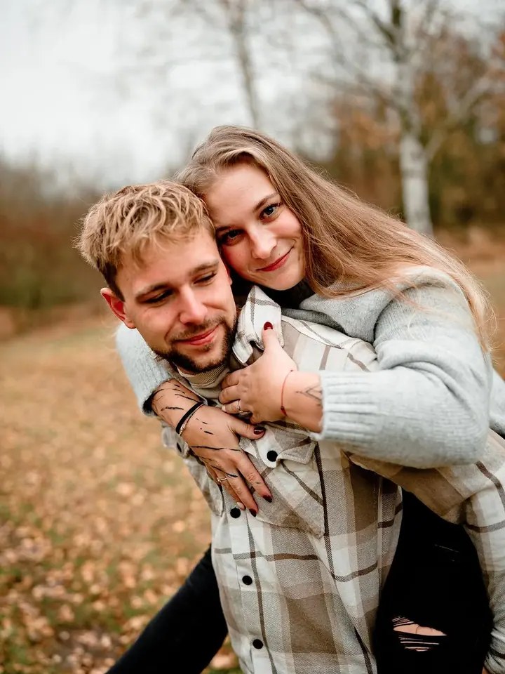
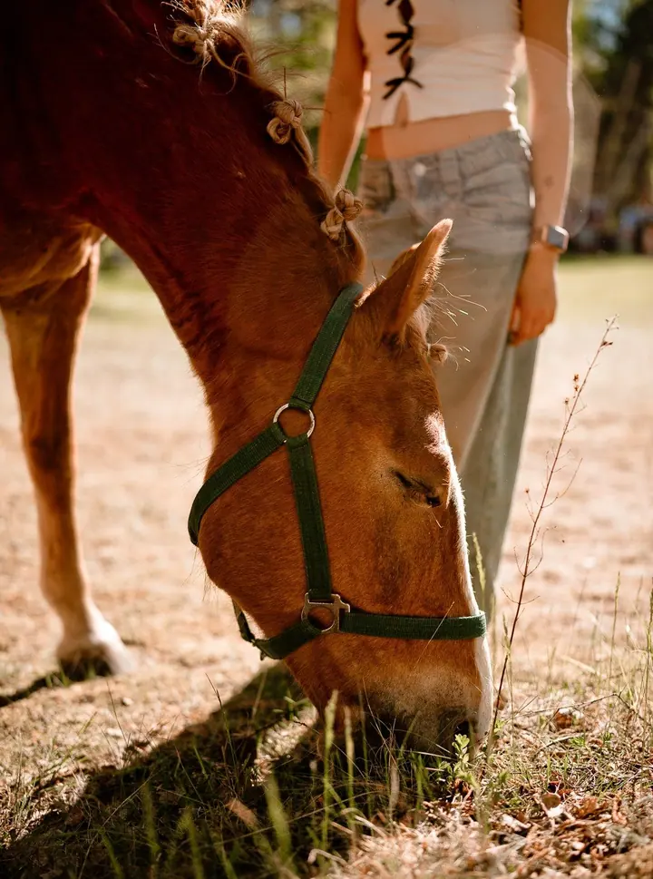
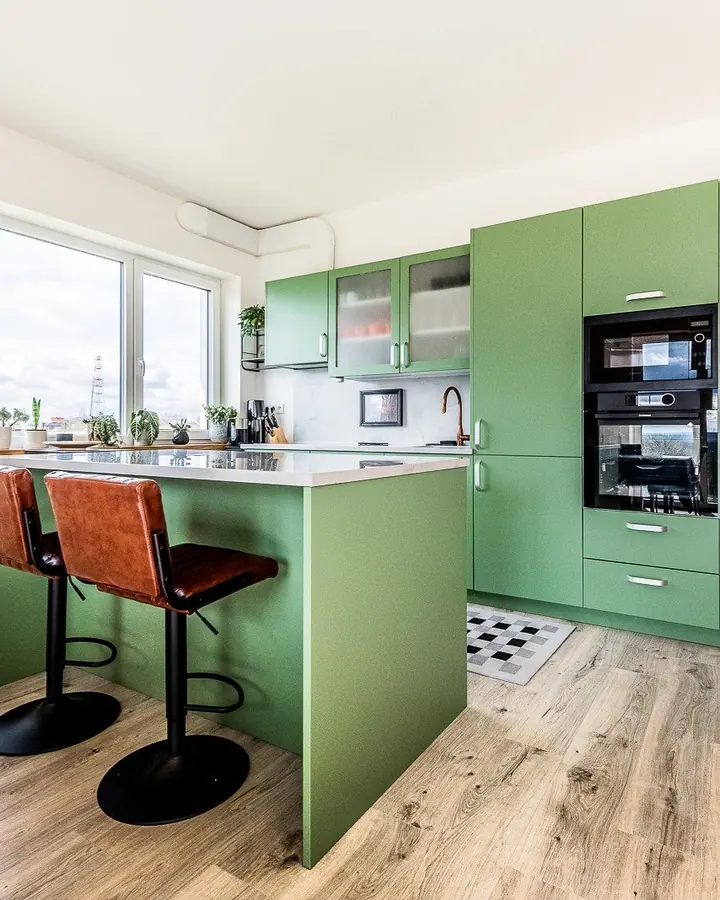
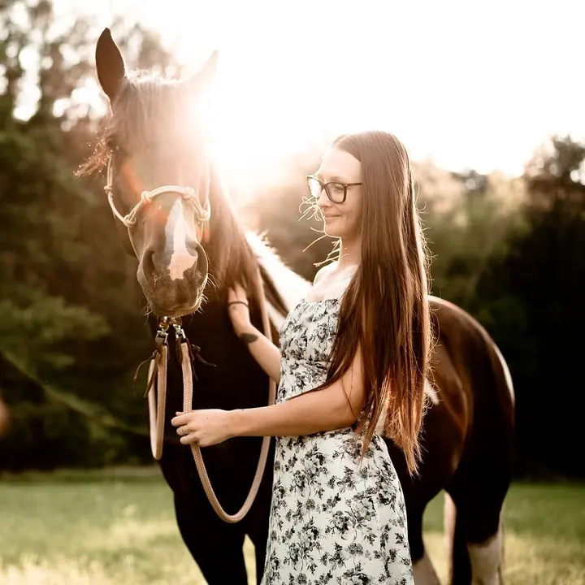
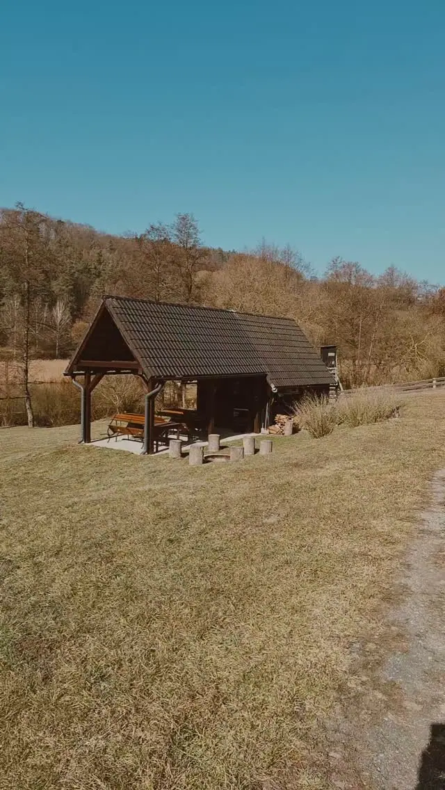

jedna
Svatby
Reportáž o vaší malé či velké svatbě, od samotného obřadu až po celý den od příprav po prskavky. Fotografie v plné kvalitě posílám přes online galerii.

Svatební a rodinná fotografka · Mělník a okolí, okres Mělník

Jmenuji se Lucie Chaloupková a fotím svatby a rodiny v okolí Mělníka. Fotografkou jsem více než 10 let a kromě lidí ráda fotím i interiéry a akce, kde je cítit pohyb a emoce.
Více o mně
Co fotím
jedna
Reportáž o vaší malé či velké svatbě, od samotného obřadu až po celý den od příprav po prskavky. Fotografie v plné kvalitě posílám přes online galerii.
dvě
Rodinné, těhotenské i párové focení venku. Přirozeně zachycuji radost, lásku, smích i pláč vašich dětí.
tři
Fotografie interiérů a nemovitostí pro reality i pro prezentaci vašeho domova. Světlé, čisté záběry, které ukážou prostor tak, jak opravdu vypadá.
Akce a události, kde se věci dějí rychle. Fotím emoce v pohybu.

Okamžiky, které nám čas nezastaví.

Za objektivem
Fotografii se věnuji více než deset let. Doma jsem na Mělnicku a nejčastěji mě najdete na svatbách a při rodinném focení venku.
Na svatbě nechci nic narušovat. Fotografuji a žiju s vámi váš den, jak jen nejpřirozeněji to jde, a skládám z něj reportáž: příběh plný života, emocí a vzpomínek. U rodin chci zachytit okamžiky, které nám čas nezastaví, ať je to smích, nebo pláč.
Kromě lidí mě baví i prostory. Fotím interiéry a nemovitosti a také eventy, kde se věci dějí rychle a emoce jsou v pohybu.
Lucie
Vyplňte svatební objednávku s místem, datem a počtem hostů. Ozvu se vám a domluvíme podrobnosti.
Vyberete si rozsah, který vašemu dni sedí: jen obřad, obřad s hostinou nebo přípravami, nebo celých 8 hodin.
Jsem s vámi a fotím přirozeně, bez zbytečného aranžování. Zachytím obřad, skupinové foto i chvíli jen pro vás dva.
Upravené fotografie v plné kvalitě posílám přes online galerii. U obřadu do týdne, u celodenního focení do dvou týdnů.
Portfolio
Otázky
Balíček Obřad (1 až 2 hodiny, nejméně 100 fotografií) stojí 6 000 Kč, Obřad+ (4 hodiny, nejméně 200 fotografií) 8 000 Kč a celodenní focení na 8 hodin (nejméně 300 fotografií) 15 000 Kč.
Za 2 200 Kč si z online galerie sami vyberete 10 upravených fotografií, každá další stojí 150 Kč. Za 3 800 Kč dostanete hodinu focení v exteriéru a všechny povedené fotky, nejméně 25 upravených, do týdne. Rodinný ceník platí i pro těhotenské a párové focení.
Doprava mimo Mělník je 8 Kč za kilometr.
Neupravené fotografie neposkytuji. Dostanete pečlivě upravený výběr v plné kvalitě.
Napište pár vět o tom, co si představujete. fotochaloupkova@gmail.com